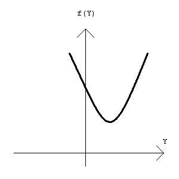

| Nama Program: | pjj0406.PAS / C / CPP |
| Batas Run-time: | 1 detik / test-case |
| Batas Memori: | 16 MB |
| Nama Berkas Masukan: | Standard input (keyboard) |
| Nama Berkas Keluaran: | Standard output (layar) |
Sebetulnya dalam dunia matematika tidak ada yang namanya "root mean to the 1.5 average". Yang ada adalah "root mean square average" (RMS average) yang banyak ditemui pada pelajaran fisika atau statistika. Tetapi karena untuk menghitung RMS average sudah ada rumusnya, jadi dalam soal ini Anda tidak diminta untuk menghitung RMS average.
Mari kita singkat "root mean to the 1.5 average" menjadi RM1.5 average (untuk meniru RMS average). RM1.5 average dari bilangan-bilangan real X1, X2, X3, ..., XN (1 ≤ N ≤ 50000) adalah suatu nilai Y sehingga nilai |X1 - Y|1.5 + |X2 - Y|1.5 + |X3 - Y|1.5 + ... + |XN - Y|1.5 adalah sekecil-kecilnya.
Catatan: tanda |...| artinya adalah nilai absolut dari ekspresi apapun yang berada di dalamnya.
Carilah nilai RM1.5 average dari masukan.
Baris pertama berisi sebuah bilangan bulat N. N baris berikutnya berisi N buah bilangan real, di mana setiap bilangan berada pada jangkauan -1000.00 hingga 1000.00 dengan maksimal dua angka di belakang koma.
Dalam satu baris, keluarkan nilai RM1.5 average dari bilangan-bilangan pada masukan. Formatlah keluaran Anda sehingga dibulatkan ke dua angka di belakang koma (dengan cara writeln(variabel:0:2)).
3 1.23 2.34 3
2.30
Gunakanlah tipe data double untuk bilangan real, supaya akurat.
Jika kita definisikan f(Y) = |X1 - Y|1.5 + |X2 - Y|1.5 + |X3 - Y|1.5 + ... + |XN - Y|1.5, maka dijamin bahwa grafik f(Y) terhadap Y akan tepat memiliki sebuah nilai f(Y) minimum, dan grafiknya akan berbentuk mangkuk menghadap ke atas, seperti pada gambar.
Karakteristik ini dapat dimanfaatkan untuk mem-binary-search nilai Y.